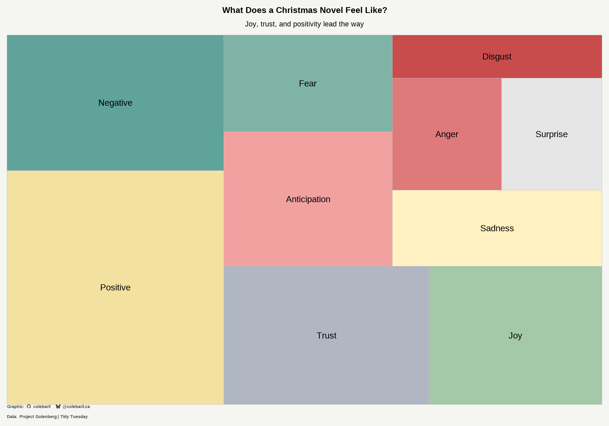

require(pacman)
p_load(tidytuesdayR, tidyverse, janitor, tidytext, extrafont, slider, here, TTR, wordcloud2, tm, textdata, treemapify, spellbook)2025-12-30 - Christmas Novels
tuesdata <- tidytuesdayR::tt_load('2025-12-30')
christmas_novel_authors <- tuesdata$christmas_novel_authors
christmas_novel_text <- tuesdata$christmas_novel_text
christmas_novels <- tuesdata$christmas_novelstext <- christmas_novel_text |> select(2) |>
unnest_tokens(word, text)
word_cleaned <- text |>
drop_na() |>
anti_join(stop_words, by = "word") |>
filter(!word %in% stopwords("en")) |>
filter(!word %in% stopwords("de"))
wordcount <- word_cleaned |>
count(word, sort = TRUE) Word Cloud
# Word Cloud
christmas_cozy <- colorRampPalette(
c("#7A1F1F", # muted cranberry
"#B11226", # warm red
"#F4F1EC", # warm snow
"#1F4D2B", # forest green
"#E6C77A") # soft gold
)(100)
set.seed(123)
christmas_cozy_random <- sample(christmas_cozy, size = 100)
wordcloud2(head(wordcount, 100), size = 0.8, color = christmas_cozy_random, backgroundColor = "black")Sentiment Analysis
# Sentiment Analysis
nrc <- get_sentiments("nrc")
word_cleaned %>%
inner_join(get_sentiments("nrc"), relationship = "many-to-many") %>%
count(word, sentiment) %>%
pivot_wider(names_from = sentiment, values_from = n, values_fill = 0) %>%
select_if(is.numeric) %>%
map_dbl(sum) %>%
as.data.frame() %>%
rownames_to_column("Emotion") %>%
rename("number" = ".") %>%
mutate(across(where(is.character), tools::toTitleCase)) %>%
ggplot(aes(area = number, fill = Emotion, label = Emotion)) +
geom_treemap() +
geom_treemap_text(colour = "Black",
place = "centre",
size = 25) +
scale_fill_manual(
values = c(
"#E07A7A", # soft holly red
"#F2A1A1", # candy cane red
"#C94C4C", # muted cranberry
"#7FB3A6", # frosted pine
"#A3C9A8", # sage green
"#5FA39A", # misty evergreen
"#F3E1A0", # pale gold
"#FFF1C1", # warm snow
"#E6E6E6", # winter frost
"#B0B7C3" # icy silver
),
guide = "none"
) +
labs(title = "What Does a Christmas Novel Feel Like?",
subtitle = "Joy, trust, and positivity lead the way") +
theme_bw(base_size = 20) +
inscribe(type = "plot", include_data_source = TRUE, data_source = "Project Gutenberg | Tidy Tuesday") +
theme(panel.grid.major.x = element_blank(),
panel.grid.major.y = element_blank(),
panel.grid.minor.x = element_blank(),
panel.grid.minor.y = element_blank(),
axis.text.x = element_blank(),
axis.ticks.x = element_blank(),
plot.title = element_text(face = "bold", hjust = 0.5),
plot.subtitle = element_text(hjust = 0.5),
legend.title = element_text(hjust = 0.5),
legend.background = element_rect(fill = "#f5f5f2"),
plot.background = element_rect(fill = "#f5f5f2", color = "#f5f5f2"),
panel.background = element_rect(fill = "#f5f5f2", color = "#f5f5f2"),
panel.border = element_blank(),
axis.line.y = element_line(colour = "black"))